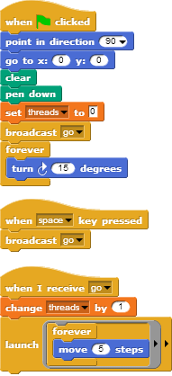

First, to understand the idea of two things happening at once, open
this Snap! file LaunchTutorial
(shown above). After you click the green flag, let it run for a bit,
then hit the space bar once. Then hit it again, and again. Talk with
your partner about what is happening, and why.
(Answer: When you hit the green flag, the sprite starts off running in a circle, because it is moving and turning at the same time. Now, whenever you hit the space key the sprite's circles become wider because it is moving more than before, and it only does that because its MOVE threads are increasing, not the number of steps per single move. For example, Snap! initially gives equal time to its 2 "forever" children -- one that turns and one that moves 5 steps. So it is move, turn, move, turn, etc., yielding a (360/15 =) 24-sided polygon with 5-step sides. The next time space bar is pressed, another "child" is born, so now the three equal-time children are: "turn", "move" and "move", yielding a 24-sided polygon with 10-step sides, or a "circle" of twice the size)